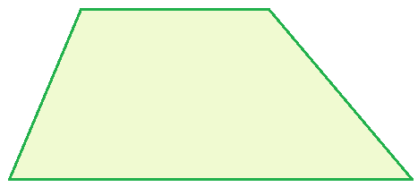
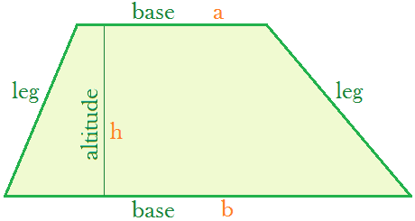
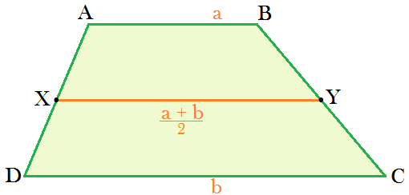
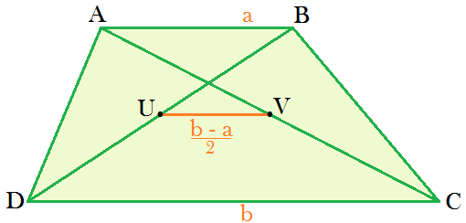

Trapezium

Definition.
A trapezium is a quadrilateral with at least one pair of opposite sides parallel.
Area of a Trapezium

The parallel sides are called the
bases
;
The other two sides are called the
legs
;
The distance between the two bases is called the
altitude
;
The
area
is the average of the two base lengths times the altitude
Area = ½ (a+b) h
Cool Facts


External Links
Trapezoid on Wikipedia
Trapezoid on Wolfram
Back to landing page